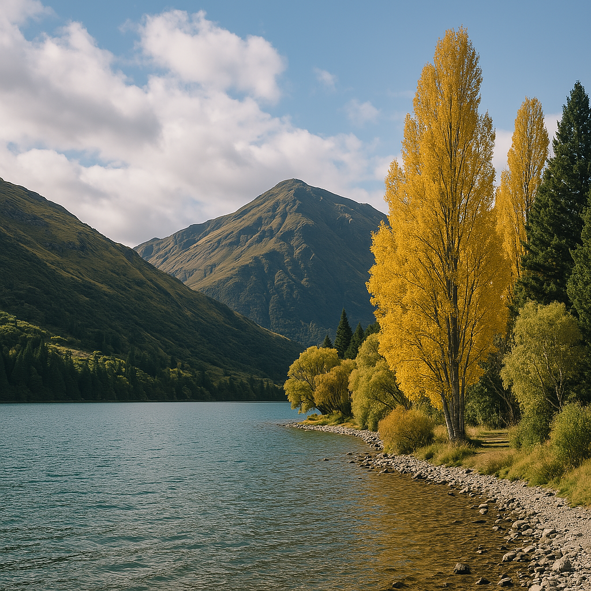
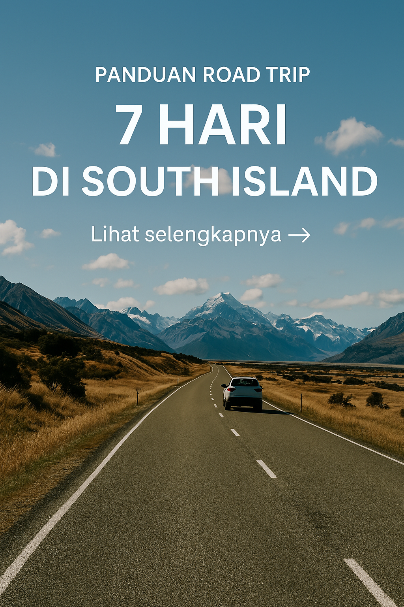

Destinasi

5 Hidden Gems di New Zealand yang Jarang Dikunjungi
Temukan destinasi rahasia yang indah & tenang di balik gemerlap Queenstown dan Rotorua.
Tips
Tips Roadtrip di Selandia Baru untuk Pemula
Roadtrip sendiri di NZ? Gak perlu khawatir! Panduan lengkap buat kamu yang baru pertama kali.
Musim
Musim Terbaik untuk Liburan ke New Zealand
Spring yang segar? Summer yang cerah? Temukan waktu terbaik untuk perjalanan impianmu.